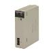
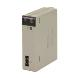
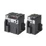

Building Automation
Industrial Automation
Power Automation & Safety


Bangladesh Distributor
Question
We are running a three-phase 200 VAC induction motor on single-phase 100 VAC. Are there any Inverters with a function that boosts voltage from 100 VAC to 200 VAC?
Answer
There are 3G3EV Inverters that can accept a single-phase 100 VAC input. These models have built-in circuit that boosts the voltage from 100 VAC to 200 VAC.
Recommended Products
 CS1W-NC[]71
CS1W-NC[]71
Decrease TCO with Simple Operation, Reduced Wiring, Batch Settings, and Batch Management
CJ2
Introducing the Flagship CJ2 CPU Units, with Built-in Multifunctional Ethernet Port.